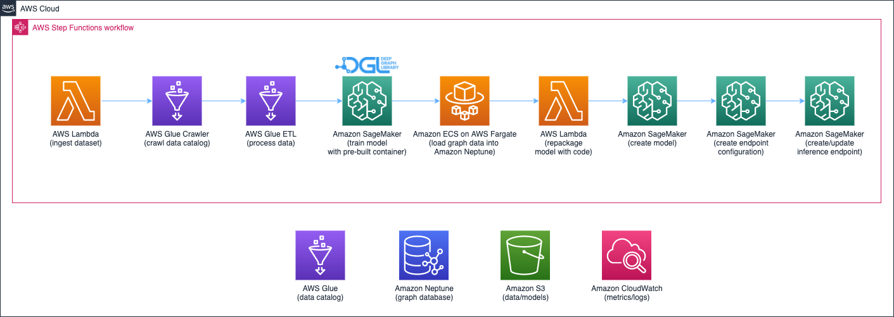

Components
the pipeline of data processing, model training and deployment

The solution uses AWS Step Functions workflow orchestrate the pipeline from raw IEEE-CIS dataset, graph data processing, training GNN model and inference endpoint deployment. Below is the detail for each workflow step,
- Use AWS Lambda function downloads dataset to Amazon S3 bucket
- Execute AWS Glue crawler to build Glue Data Catalog from dataset
- Execute AWS Glue ETL job processing the raw data, converting the tabular data to graph structure data, then write to S3 bucket
- Use Amazon SageMaker trains the GNN model on DGL
- After training the model, loading graph structure data into graph database Neptune Amazon Neptune
- Package the custom inference code with model
- Use Amazon SageMaker to create model, configure endpoint configuration and deploying inference endpoint
real-time fraud detection and business monitor system

real-time fraud detection
The solution follows below steps for implementing real-time fraud detection,
- Process the online transaction data as the graph structure data
- Insert the graph data(vertices, edges and relationships) into graph database Neptune
- Query the sub-graph of current transaction vertice and its 2nd connected vertices
- Send the data of sub-graph to inference endpoint to get the possibility of fraudulent of the transaction. Then publish the transaction and its fraudulent possibility to Amazon SQS queue
business monitor system
The solution uses below services consisting of the monitor system of fraudulent transactions,
- Use AWS Lambda function to process the online transaction in SQS queue, then store them into Amazon DocumentDB
- Provide the transaction stats interface via AWS AppSync
- The web app of monitor system is deployed on Amazon S3, and it's distributed by CDN Amazon CloudFront
- Mock up the online transactions via AWS Step Functions, which uses test data in IEEE-CIS dataset requesting the API of fraud detection of transactions
- Amazon API Gateway provides the authentication for AppSync interface and trigger the simulation of online transactions